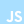

主打作品
查看 n8n 用量對帳
從散會到下次開會
散會後，同事要重聽整段錄音、整理英文紀錄，還要接手準備下次議程。我把兩次會議之間的交接畫出來，逐步釐清哪些資料可以沿用、哪些決定一定要有人確認。
工時省在哪裏？
以設計部一場 90 分鐘的粵語會議為例。以前同事聽完整場，再花約 3 小時寫稿，之後交主管覆核。
一個會議週期，四次交接
- 散會後
由錄影建立草稿
程式整理音訊和舊議程。AI 從今次錄音抽出決定，逐項附上時間碼和原句，寫成英文初稿。
交付 · 有來源的草稿 - 核稿時
只重聽有疑點的片段
例如「準備提交」和「已提交」會影響跟進。系統列出待確認項目，同事聽回相關片段，答案連來源記錄。
交付 · 已核對的紀錄 - 兩次會議之間
並行準備議程和分享
負責同事更新提交進度，另一邊由工程師準備分享材料。按各自的交件時間收集，齊備後才合併。
交接 · 進度表及分享文件 - 下次開會前
組成可派發的會議包
議程和分享資料整理成 PDF，同事核對內容及會議連結後派發。下次散會，沿用議程框架再核對新決定。
交付 · 下次會議資料
進度資料提交清單 → 議程 PDF
負責同事先更新提交清單。收到最新進度後，整理者把資料併入 Excel 議程，核對未完成的項目，再準備會議用 PDF。
分享資料工程師簡報 → 分享 PDF
工程師提供簡報或 PDF。簡報需轉檔，然後按當次分享內容合併、核對頁次，另存一份分享文件。
我把日常操作包成 Python／Tkinter 桌面工具。同事可以在視窗內執行流程、預覽並複製電郵草稿，再自行核對及發出。
一句說話，如何落筆
舊議程提供欄位，今次錄音提供證據。即使只差「準備」兩個字，也會改變跟進工作。
- 程式固定格式
- Python 按議程建立骨架，用 FFmpeg 整理錄音，再交 faster-whisper 本機轉錄。重複的欄位和匯出格式可逐次重用，減少模型處理量。
- 模型整理語意
- 先抽出每項決定、時間碼、原句和把握程度，再寫英文點列。沒有本次來源的舊進度留在正文以外。
- 人處理疑點
- 遇到日期不清或轉錄結果不一致，程式把相關片段整理成問題包。確認過的答案有來源記錄，術語校正可供下次辨識沿用。
少用 Token，品質如何？
把一道工序由模型改交程式後，怎樣知道值得？我以 AI 協作開發用量對帳工具，用同一批任務比較改動前後的 Token。兩次都交到合格結果，才計入節省用量。
試算一批任務
內置合成例子涵蓋格式整理、會議答疑和缺少出處的答案。你亦可以換成自己的匿名紀錄，資料只在瀏覽器處理。
查看或更換輸入資料
每個 caseId 的 before 和 after 各一筆。inputTokens 和 outputTokens 填總用量，accepted 填 true、false 或 null。交付前，逐格驗收
一張表看起來完整，仍可能有數字被存成文字，或落在隔壁一欄。我用有標準答案的測試表，把輸出的格位、資料型別和數值逐一比對。
你可以在瀏覽器讀取原程式匯出的 Excel，重跑這項檢查。
下載同一份 Excel ↓20 頁 × 50 行 × 20 欄
按下核對後，逐頁檢查 Excel。
原轉換測試紀錄 ↗ 測試範圍為已指定選區的文字型 PDF。掃描件及 OCR 需另行驗證。其他作品
複雜文件判讀複雜 PDF 個案 5 小時 → 15 分鐘
為跨頁、多欄資料建立 AI 判讀 Skill，已處理 20 份文件。
 先分清欄位，才讀內容
先分清欄位，才讀內容先認版面
Skill 先引導 AI 定位欄線、合併格與分頁邊界，建立資料之間的關係。
上方重現 Skill 的判讀次序。Excel 由原程式使用合成資料輸出。
技術與取捨
- 先認版面。 Skill 引導模型核對欄列、跨頁和細字，保留疑點的來源。
- 用程式交付。 Python 整理結構化資料及輸出 Excel，交工程師覆核。
日常文件工具3 個工具處理公式、批註及合併
- Excel 公式助手
- 按規則找出要更新的公式，先預覽差異，再另存工作簿副本。
- PDF 批註工具
- 在頁面畫框、加圖例，匯出後仍可看到標記的位置。
- PDF 合併工具
- 按順序合併、加頁碼和書籤，保留原頁上的簽署及蓋章外觀。
技術與取捨
瀏覽器預覽工作簿修改。PDF 工具以 JavaScript 換算標記座標，Python 處理合併、旋轉及頁碼。
圖則與模型掃描圖 → 可編輯圖則
- 掃描圖轉可編輯圖則
- 將掃描或手繪詳圖重繪成可編輯的線、物件和文字。
- 詳圖與驗算 Skill
- 讓 AI 按指定格式整理圖則和核對重點，交工程師覆核。
- 模型檢查原型
- 先讀取既有模型及施工階段，生成待核對的清單。
技術與取捨
Python 產生可由 progeCAD 讀取的圖則流程。模型工具用 PLAXIS 腳本介面讀取狀態。
講座摘要長篇錄影 → 附時間碼的摘要
- 逐字稿
- 獨立的粵語轉錄 Skill 在本機工作，保留時間碼。
- 重點摘要
- 整理結論及關聯畫面，把原句疑點交還用戶核對。
- 交付文件
- 重點及引圖都可回到影片對應時間查看。
技術與取捨
faster-whisper 做本機轉錄。Skill 選取要點，Python 將固定版面輸出成文件。
程式 3D 動畫施工工序 → 可重跑的解說動畫
- 建立場景
- 以程式構建地形、道路、工地設備及主要物件。
- 安排鏡頭與工序
- 用時間關鍵幀控制車輛移動、物件出現及鏡頭路徑。
- 渲染成片
- Blender 按相同設定重跑動畫，不必重新逐格製作。
技術與取捨
Python 驅動 Blender，將資產、時間及渲染設定分開，改一段工序即可重新輸出。
影片剪接與上傳劇本 → 成片及上傳預檢
先把錄音對齊劇本
- 字幕區間
- 0.00–1.35 s
- 動畫觸發
- 0.74 s · 等待
拖動時間軸或選片段。留意字幕何時換行，以及畫面何時按標記觸發。
本頁以合成畫面示範 timeline.json 的段落、字幕區間與字詞時間碼。正式剪輯以 Remotion 渲染。
技術與取捨
- 共用時間軸。 AI 拆解劇本，Whisper 提供逐字時間，Python 調用 FFmpeg 處理剪接與音訊。
- 按階段重跑。 Remotion 合成字幕和動畫，質檢通過後再發佈。
上傳預檢
載入預檢結果…
結果來自原程式的合成檔案測試。預檢在本機執行。
技術與取捨
- 固定邏輯先跑。 Node.js 配對素材、檢查缺件和換檔，日誌供重跑跳過已完成工作。
- 提交另外控制。 Playwright 填寫上傳表單，先預檢再發佈。
內容同步
- Python 排程準備短片
- Node.js 同步內容
- GitHub → Vercel 更新網站
技術與取捨
上傳、資料同步和靜態建置各自記錄狀態，內容更新可定時執行。
投標方案展示
讓投標團隊用同一個模型比較施工方案。


技術與取捨
- 一份資料，兩種圖
- 分區與標高共同驅動 Three.js 模型及 2D 圖則，調整設定後同步更新。
- 方案可檢視
- 旋轉、切換視角及移動剖切線，讓團隊比較開挖標高和支護位置。
技術棧
- AI 與工作流
- Gemini
- n8n 工作流
- Whisper
- Python 自動化
 Python
Python- FFmpeg
- OpenCV
- 前端
- Next.js

JavaScript
- 3D
 Three.js
Three.js- Blender
- 部署
 GitHub Pages
GitHub Pages- Vercel
經歷
Assistant AI and design Administrator
Kin Wing Engineering Co. Ltd · 設計部
把設計部的會議紀錄、工程師的報表轉換流程做成可重複使用的工具，並為投標團隊開發方案展示模型。
- 大學期間至今
自主產品與自動化
獨立開發 ToGoalAi、影片上傳及製作流程。
國立政治大學
公共行政學系
經 HKCAAVQ 評估為等同香港榮譽學士學位。
Claude 101 · AI Fluency · 粵語、普通話、英語

自我介紹
我習慣先跟同事走一次現有流程，找出他們在哪裏重做、在哪裏等人回覆。做會議紀錄時，我想解決的是「同事還要聽多少次錄音，才敢把這句話寫進紀錄」。
在 ToGoalAi，我由介面、資料庫到上線都自己處理。我想把同一種交付能力帶到下一個 AI Engineer 崗位。
我計劃用自己開發的 AutoCut Skills 製作這段自介，由腳本、真人錄影對稿，到字幕、聲音處理和 Remotion 剪接。
查看影片製作示範 ↗